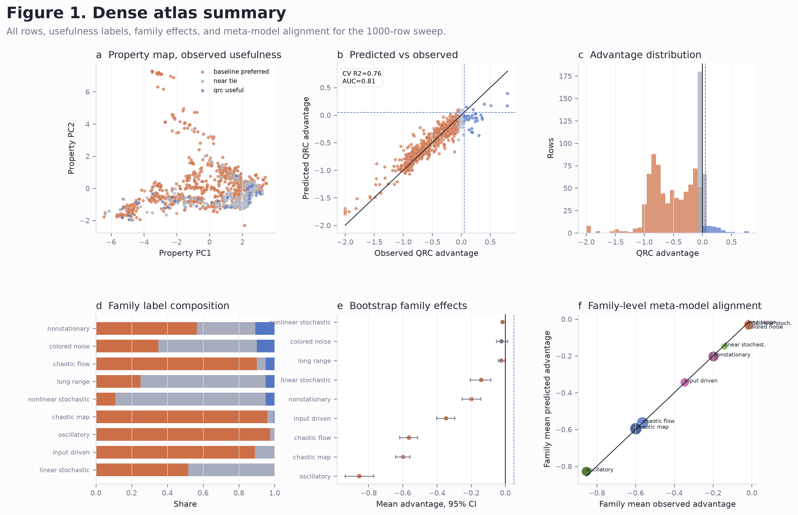
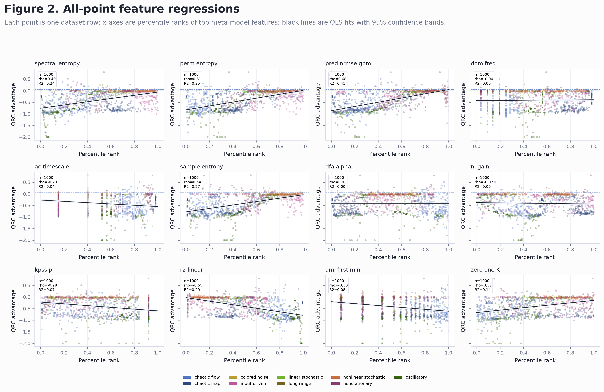
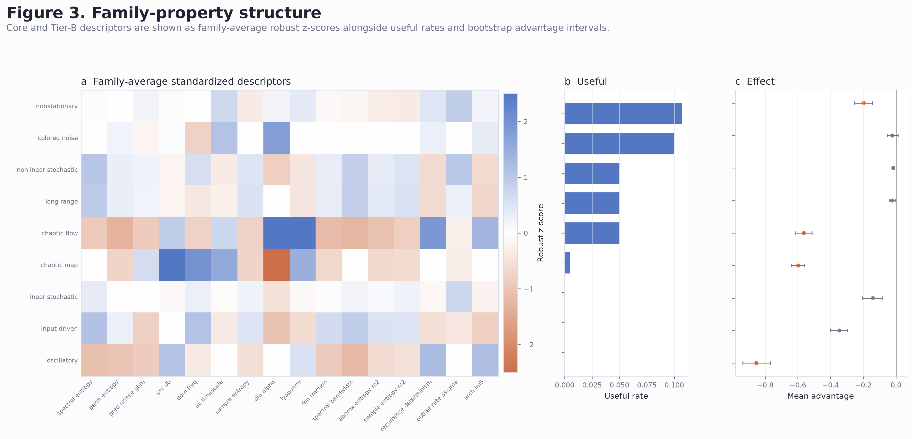
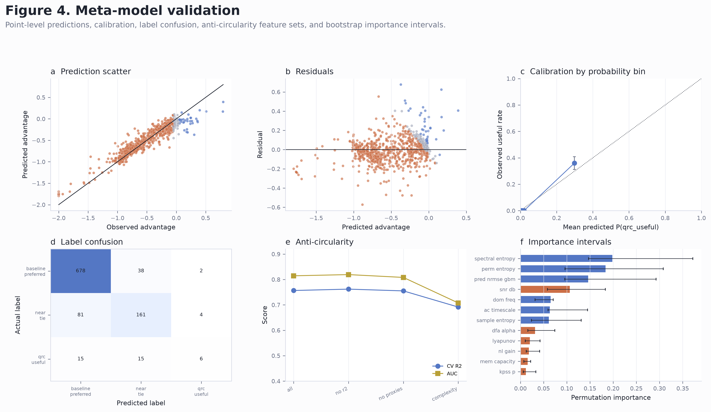
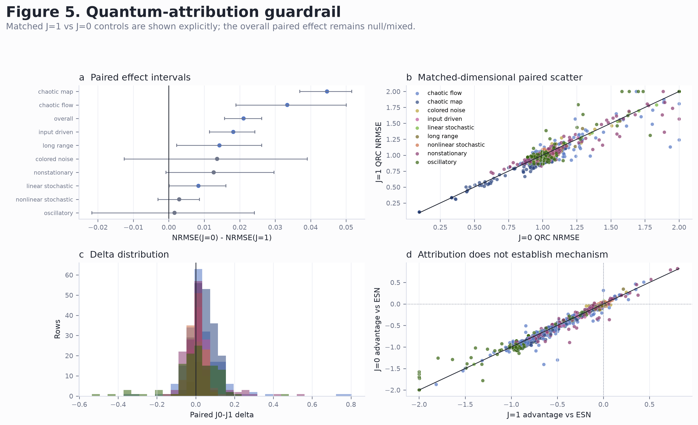

Fig1 Dense Atlas Summary
Dense atlas summary with row-level map, distributions, family intervals, and family prediction alignment.

Fig2 Dense Feature Regressions
All-point feature regressions with fitted trends and confidence bands.

Fig3 Dense Family Feature Matrix
Family-level core and extended feature matrix with useful rates and effect intervals.

Fig4 Dense Model Validation
Meta-model prediction, calibration, confusion, robustness, and importance diagnostics.

Fig5 Dense Attribution Guardrail
Dense paired J=1 vs J=0 attribution-control diagnostics.
